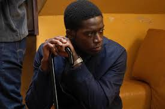
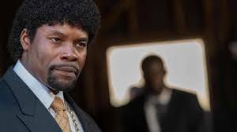
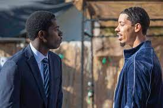
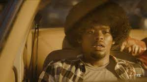
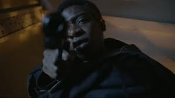

1. re-entry
With violence in South Central ramping up, Franklin attempts to stop a gang war from exploding; Gustavo and Teddy deal with pipeline issues; local reporter Irene Abe attempts to understand what's happening to her neighborhood; Leon charts a new path.

2. weight
Chaos reigns as Franklin's plans go awry and he turns to an old flame for help; Leon struggles without Franklin; Cissy takes a more active role in Franklin's business; Gustavo's world is shaken; Irene finds her way to Alton's shelter.

3. all the way down
Franklin's troubles extend beyond the gangs, putting Cissy in jeopardy; Teddy and Gustavo seek revenge.

4. expansion
Franklin's missteps put Leon in the crosshairs, resulting in an unexpected reconnection; Teddy faces fallout from Tijuana; Irene's investigation has a promising new lead; Franklin tries to appease Cissy.
